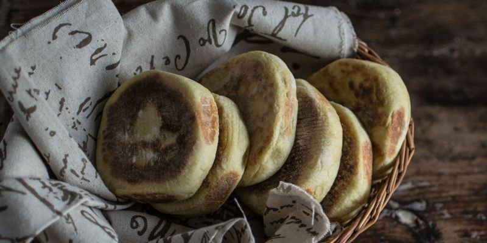

Bolo de Caco

What are Bolo de Caco ?
Bolo de Caco is a type of Bread that originates in Portugal. It is typically made in a hot pan.
Ingredients
- 500 grams plain flour.
- 7 grams yeast.
- 200 grams sweet potatoes (about 2)
- 1/2 teaspoon salt.
- 1/2 teaspoon freshly ground pepper.
- 350 millilitres warm water.
Steps
- Bake the sweet potatoes in the oven for about 30 to 40 min.
- Mash the sweet potatoes
- Combine the sweet potatoes and the other ingredients into a soft, wet dough.
- Mix the dough for 5 to 10 min.
- Cover the dough and take a 30 min break.
- Divide the dough into four equal pieces and shape them into flatted rounds.
- Take another 30 min break.
- Melt a small amount of butter in a pan and cook each round over low heat for 8 to 10 min on each side
- Wait until cooled off a bit and enjoy.
Home